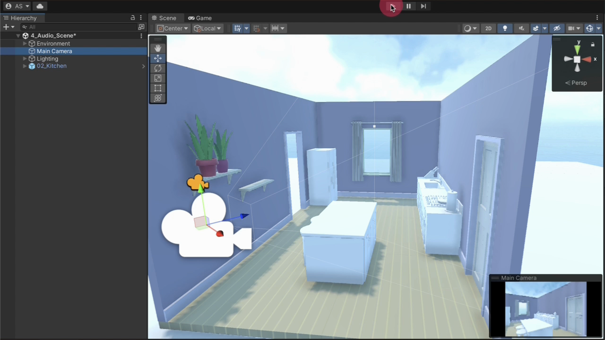
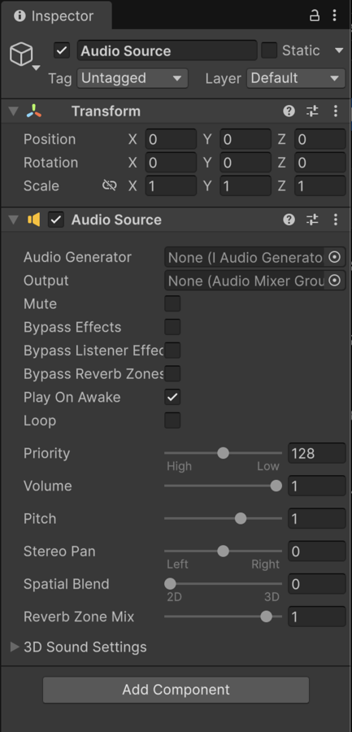
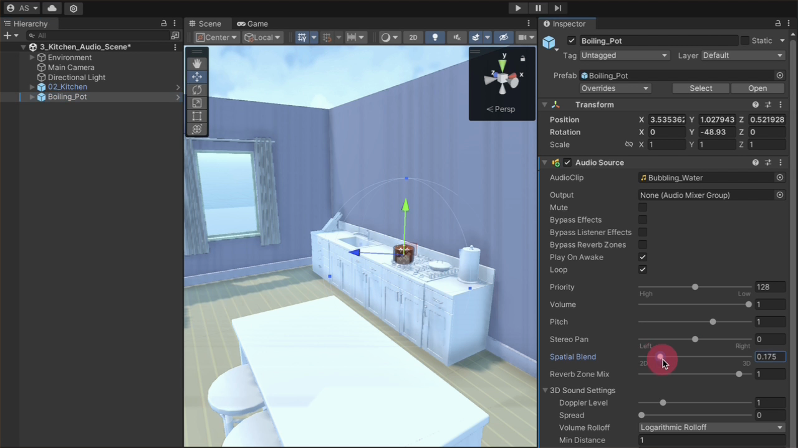
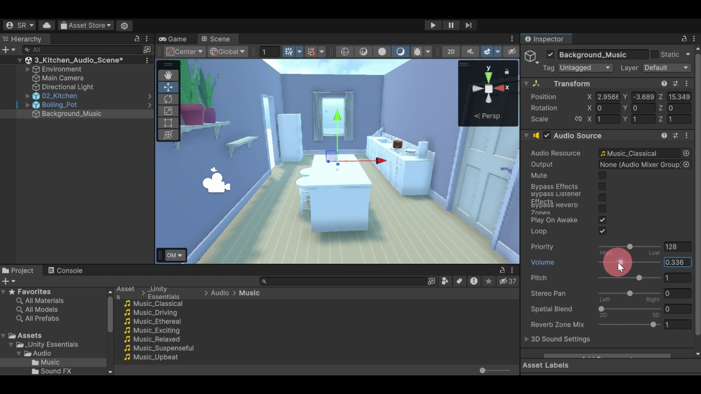
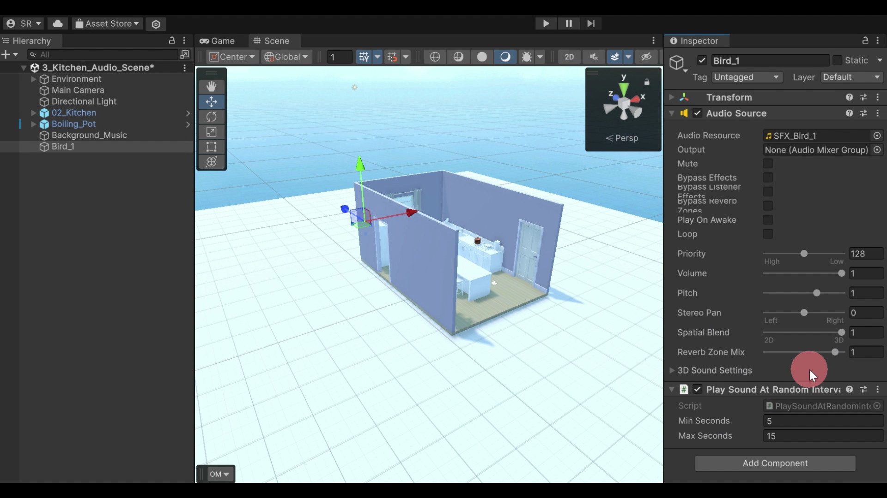
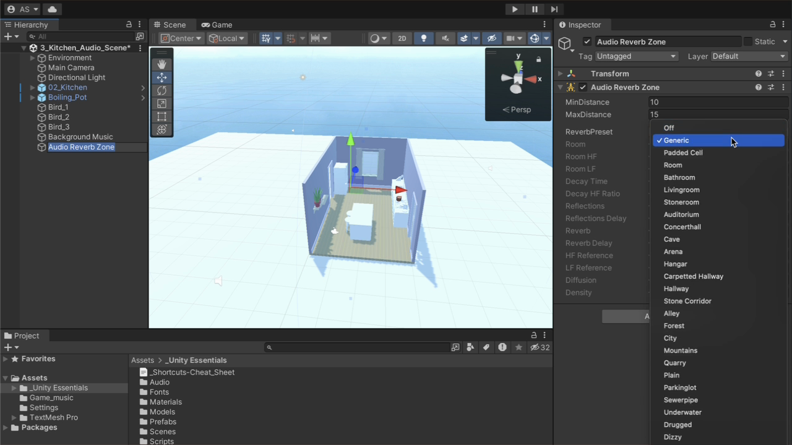

Build a soundscape whose behavior can be explained and tested.
The finished kitchen combines a stable music layer with continuous and intermittent environmental sounds. Each audible result should trace back to an asset, a component, a setting, or the listener’s position.
- Distinguish an Audio Clip, Audio Source, and Audio Listener.
- Configure continuous and triggered playback behavior.
- Choose 2D or 3D audio from the sound’s role in the scene.
- Verify distance and direction with controlled listener movement.
- Layer and balance music, appliance sound, and exterior ambience.
- Diagnose common silent, constant-volume, and mistimed results.
Start from silence and map the audio system
Unity separates audio data from playback behavior. An Audio Clip stores sound data; an Audio Source plays an assigned generator from a GameObject; one active Audio Listener receives the scene’s audible sources.
- In the Project window, open _Unity Essentials → Scenes → 3_Kitchen_Audio_Scene.
- Enter Play mode and explore the silent kitchen with WASD and the mouse.
- Exit Play mode. In the Hierarchy window, select Main Camera.
- In the Inspector window, locate its Audio Listener component.
- Confirm that the scene has exactly one active Audio Listener.

| Element | Where it lives | Responsibility |
|---|---|---|
| Audio Clip | Project window | Stores imported sound data as a reusable asset. |
| Audio Generator | Audio Source Inspector | References the Audio Clip or Audio Random Container to play. |
| Audio Source | GameObject component | Controls playback, volume, looping, and spatial behavior. |
| Audio Listener | Usually Main Camera | Receives audible sources from the player’s position and orientation. |
Sources: Create an immersive soundscape ↗ · Unity 6.3 Audio Listener reference ↗
Attach a looping source to the boiling pot
A sound that belongs to a visible object should originate from that object. Add the pot first, then place the Audio Source component on the same GameObject so its Transform defines the sound’s world position.
- From _Unity Essentials → Prefabs → Kitchen, drag Boiling_Pot onto a stove burner.
- Select Boiling_Pot, choose Add Component, and add Audio Source.
- In the Audio Source component, use the object picker for Audio Generator.
- Assign Bubbling_Water.
- Enable Loop so the continuous appliance sound restarts at the end of the clip.
- Leave Spatial Blend at 0 temporarily, then enter Play mode.
- Walk near and far from the pot. The clip should play, but its presence should remain constant for this first test.

Sources: Create an immersive soundscape ↗ · Unity 6.3 Audio Source reference ↗
Make position and orientation audible
Spatial Blend controls how strongly Unity’s 3D audio calculations affect a source. At 0, playback ignores world position. At 1, distance and direction between the source and listener affect the result.
Position-independent. Use it for nondiegetic music or interface audio that should remain stable as the listener moves.
Position-dependent. Use it for visible or local environmental sources such as a pot, refrigerator, or bird.
- Select Boiling_Pot and set its Audio Source Spatial Blend to 1.
- Enter Play mode and stop across the room from the pot.
- Walk directly toward the stove. The boiling should become more present as distance decreases.
- Stand beside the pot and rotate left, right, and away. Listen for the source direction to change with listener orientation.
- Exit Play mode before adjusting settings.

| Property | What it controls | Test |
|---|---|---|
| Spatial Blend | How much 3D processing affects the source | Compare position-independent 0 with fully 3D 1. |
| Min Distance | Inner region where volume remains at its maximum | Walk just inside and outside the boundary. |
| Max Distance | Outer distance behavior, dependent on rolloff mode | Do not assume silence; inspect Volume Rolloff. |
| Volume Rolloff | How volume changes as distance increases | Compare the same route after changing only this mode. |
Sources: Create an immersive soundscape ↗ · Unity 6.3 Audio Source reference ↗
Add background music without placing it in the room
The boiling pot is diegetic: it has a visible source inside the world. Background music is nondiegetic in this scene: it supports the overall atmosphere and should not become louder near one wall or quieter near another.
- Right-click empty space in the Hierarchy window and choose Audio → Audio Source.
- Rename the new GameObject Background Music.
- In the Project window, open _Unity Essentials → Audio → Music.
- Select candidate clips and use the Preview panel at the bottom of the Inspector window.
- Assign one clip to the Background Music Audio Source’s Audio Generator.
- Enable Loop, set Volume between approximately 0.1 and 0.5, and keep Spatial Blend at 0.
- Enter Play mode, walk through the kitchen, and balance the music against the boiling pot.

Source: Create an immersive soundscape ↗
Trigger localized bird calls at varied intervals
A continuous loop would make birds sound mechanical. Place separate 3D sources outside, disable automatic startup, and let the provided interval component trigger each source at different times.
| Control | Behavior | Use here |
|---|---|---|
| Play On Awake | Starts playback when the component becomes active | Disable for birds. |
| Loop | Restarts the same clip at its end | Leave disabled for individual chirps. |
| Play Sound at Random Intervals | Triggers playback between minimum and maximum delays | Add to every bird source. |
- Create another Audio Source and move it outside a window or near an implied tree.
- Rename it Bird_1 and assign SFX_Bird_1 to Audio Generator.
- Set Spatial Blend to 1.
- Disable Play On Awake.
- Choose Add Component and add Play Sound at Random Intervals.
- Duplicate the source as Bird_2 and Bird_3. Give them different clips and exterior positions.
- Enter Play mode and listen long enough to hear more than one interval from more than one position.

Source: Create an immersive soundscape ↗
Change one layer at a time and diagnose the result
A layered mix is easier to reason about when each source is tested independently before the full scene. Mute or disable one layer, repeat the same listener route, and change one property between runs.
- Test the pot alone at far, middle, and near positions.
- Add music and repeat the route. Reduce music Volume until the pot’s distance change remains audible.
- Add birds and wait through several trigger intervals.
- Inspect the Hierarchy: source names should reveal their roles without selecting them.
- Exit Play mode, apply the final values, and save the scene.
| Observed result | Likely cause | Inspect |
|---|---|---|
| A source is silent | No generator, muted/disabled source, or no trigger | Audio Generator, Mute, Play On Awake, interval component |
| Pot never changes with movement | Spatial Blend is still 0 | Boiling_Pot Audio Source |
| Music changes near walls | Music was spatialized | Background Music Spatial Blend |
| Bird plays at scene start | Play On Awake is enabled | Bird Audio Source |
| Bird never repeats | Interval component is absent or disabled | Play Sound at Random Intervals |
| Editor reports listener conflict | More than one active Audio Listener | Camera and player GameObjects |
Build and prove a three-layer kitchen soundscape
Produce one saved scene that combines the lecture’s central systems. This is the required lecture task.
| Layer | Required configuration | Observable evidence |
|---|---|---|
| Boiling pot | Looping Bubbling_Water; Spatial Blend 1 | Louder near the stove and direction changes when turning. |
| Background music | Looping music; reduced Volume; Spatial Blend 0 | Presence stays consistent at three listener positions. |
| Exterior birds | At least two 3D sources; Play On Awake off; interval component | Calls occur at varied times and from distinct locations. |
- Confirm exactly one active Audio Listener on the Main Camera.
- Start at the doorway and listen for at least ten seconds without moving.
- Walk to the stove and rotate left, right, and away from the pot.
- Cross the kitchen and verify that music remains stable while the pot changes.
- Wait for at least two bird calls and identify their different directions.
- Exit Play mode, save the scene, and capture either one Hierarchy/Inspector screenshot or a short written test log.
Optional: design an acoustic boundary with reverb
This task is optional and does not affect lecture completion. It extends source–listener distance into room acoustics: the listener’s position inside a zone changes how audible sources reverberate.
- Right-click the Hierarchy window and choose Audio → Audio Reverb Zone.
- Use the Move tool to place the zone at the center of the kitchen.
- Inspect the inner Min Distance and outer Max Distance gizmos.
- Enter Play mode and compare Room with one exaggerated preset such as Cave or Underwater.
- Walk from outside the zone through its boundary and into the center.
- Choose a final preset that fits the kitchen, exit Play mode, and save it.
- Write one sentence explaining where the effect begins, where it becomes strongest, and why the final preset fits.

Sources: Audio Essentials: More things to try ↗ · Unity 6.3 Reverb Zones reference ↗
Completion criteria
Lecture completion requires the core soundscape, the controlled listening evidence, and the explanations below. The reverb extension remains optional.
Diagnostic questions
- Why is an Audio Listener normally attached to the Main Camera rather than a stationary prop?
- Where can you preview a selected Audio Clip before assigning it?
- Why should background music use Spatial Blend 0 in this scene?
- If Bird_1 chirps immediately and never repeats, which two controls should you inspect?